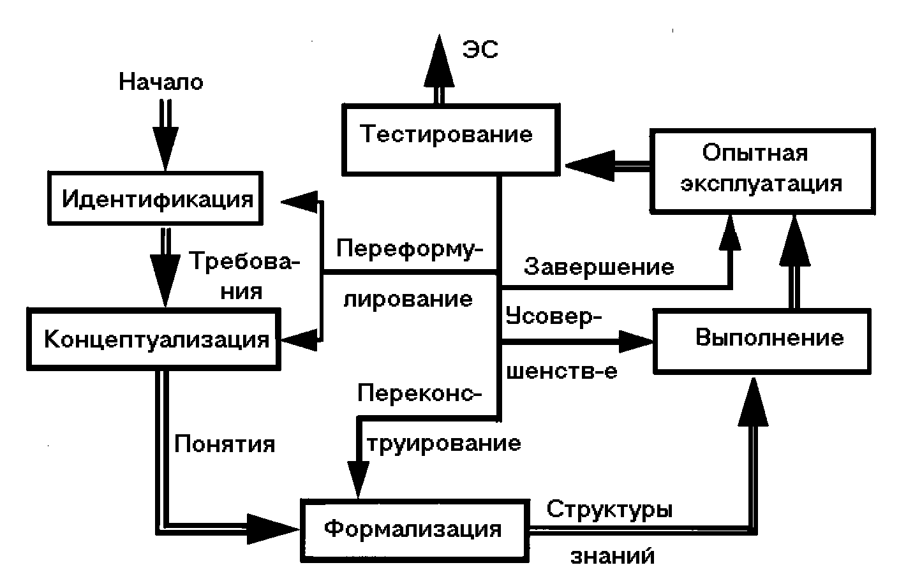

Экспертные системы
Экспертное знание – это сочетание теоретического понимания проблемы и практических навыков ее решения, эффективность которых доказана в результате практической деятельности экспертов в данной области. Фундаментом экспертной системы любого типа является база знаний, которая составляется на основе экспертных знаний специалистов. Правильно выбранный эксперт и удачная формализация его знаний позволяет наделить экспертную систему уникальными и ценными знаниями. Врач, к примеру, хорошо диагностирует болезни и эффективно назначает лечение, не потому, что он обладает некими врожденными способностями, а потому что имеет качественное медицинское образование и большой опыт в лечении своих пациентов. Поэтому ценность всей экспертной системы как законченного продукта на 90% определяется качеством созданной базы знаний.
Экспертная система – это не простая программа, которая пишется одним или несколькими программистами. Она является плодом совместной работы экспертов в данной предметной области, инженеров по знаниям и программистов
Эксперт предоставляет необходимые знания о тщательно отобранных примерах проблем и путей их решения. Например, при создании экспертной системы диагностики заболеваний врач рассказывает инженеру по знаниям об известных ему заболеваниях. Далее эксперт раскрывает список симптомов, которые сопровождают каждое заболевание и в заключение рассказывает об известных ему методах лечения. Инженер по знаниям, формализует всю полученную информацию в виде базы знаний и помогает программисту в написании экспертной системы.
